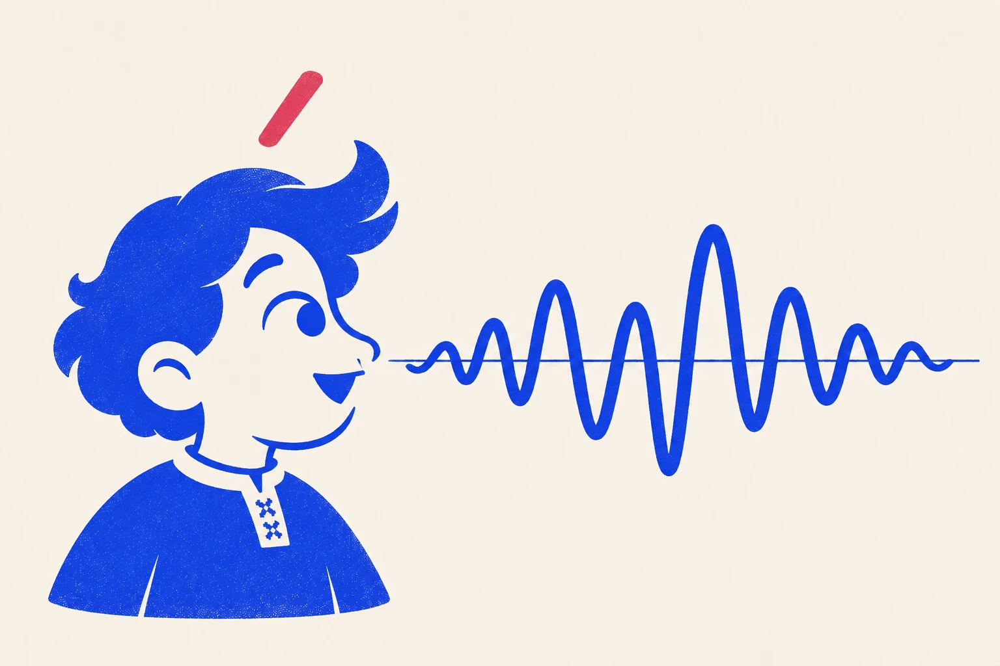

Синтез русской речи · v0.4
Малёк
Ванёк
По-английски — Tiny Vanya

Маленькая модель, которая читает русский текст вслух прямо на вашем устройстве: в браузере, на ноутбуке, на сервере без видеокарты, на iPhone. Два голоса, интернет нужен только для первой загрузки.
Попробуйте ниже: модель скачается один раз и дальше работает у вас, без сервера.
Напишите свою фразу
Одни и те же фразы двумя голосами
Здравствуйте! Это Малёк Ванёк, маленькая модель синтеза русской речи, которая работает прямо в браузере.
Встречу перенесли на 15:30, четырнадцатого марта, так что у нас осталось около сорока пяти минут.
Ты правда думал, что я забуду про твой день рождения?
Осенью в парке особенно тихо: листья медленно падают на дорожки, а воздух пахнет дождём и дымом.
Мы обновили API, и теперь приложение работает в Windows и на iPhone.
Hello! I can read English too: this small speech model runs right on your device.
Как подсказать ударение и интонацию
Обычный текст модель читает сама. Если слово прочитано не так, это можно поправить прямо в тексте.
Ударение
Поставьте «+» перед ударной гласной. Так же работает знак ударения после гласной. Многие омографы модель различает по смыслу сама: «со сторон+ы», но «ст+ороны договорились».
з+амок · зам+ок · дорог+ой другБуква ё
Пишите «ё», где она есть. Модель восстановит её в «о всём», «обо всём» и словах, которые знает только с «ё».
Всё готово · Он рассказал обо всёмИнтонация
Её задаёт пунктуация: «?» поднимает тон в конце вопроса, «!» даёт восклицание, запятая, «—», «:» и «…» — паузы. Если вопрос прозвучит как утверждение, модель сама это заметит и поднимет тон.
Ты придёшь? · Нет — я занят!Главное слово вопроса
Поставьте «^» перед словом, о котором спрашиваете. Модель поднимет на нём тон, если подъём слишком слабый.
Ты купил ^хлеб? · ^Ты купил хлеб?Числа и даты
Время, суммы, даты и годы раскрываются в слова сами, с нужным падежом: «3 мая» — «третьего мая», «в 2026 году», «с 5 до 7» — «с пяти до семи». Сложные случаи можно написать словами.
3 мая · в 2026 году · с 5 до 7 · в 15:30Английские слова
Пишите их латиницей. Сокращения в русской фразе читаются русскими названиями букв, римские числа — числами. При первой фразе с латиницей браузер один раз загрузит английское произношение, около 15 МБ.
API — «эй пи ай» · XIX векТемп и высота
В демо есть темп. В коде ещё высота голоса pitch_shift (0,058 — около полутона) и размах интонации pitch_range.
--speed 1.1Длинный текст
Текст любой длины читается по предложениям, звук склеивается. Слишком длинная фраза делится по запятым.
--text-file book.txtПочему мы отошли от рецепта tiny‑voca
Мы начали с рецепта tiny‑voca: крошечная модель сама собирает звук из импульсов и шума, примерно как голосовые связки и рот. На русском такой голос звучал роботизированно, а в мужском был слышен дребезг. Чтобы от него избавиться, мы изменили схему.
Учитель
Большая модель Qwen3‑TTS прочитала около 31 500 фраз каждым голосом. После проверки через Whisper осталось 72 часа речи. Для v0.3 добавили 3 237 клипов с вопросами «да/нет», для v0.4 — 11 504 клипа с английскими фразами и английскими словами в русских. Ударения расставил RUAccent, спорные слова мы вычитали вручную.
Два шага вместо одного
Модель рисует спектрограмму — картинку звука по частотам, а отдельный нейровокодер превращает её в звук. Модель выросла с 4,5 до 36 миллионов параметров.
Причина дребезга
Гармоники голоса на спектрограмме выглядят как ровные полосы. Ниже 2 кГц модель ставила их не туда: при обучении она видела не ту высоту тона, что в записи, размывала полосы, а потом дорисовывала их наугад.
Исправление
Теперь при обучении модель видит настоящую высоту тона и получает подсказку, где для неё должны лежать гармоники. Отдельный критик следит за низкими частотами. Полосы встали на место, дребезг ушёл.
Модель в своём проекте
Веса, инструкция, Core ML для iPhone и пакет для Python — в репозитории на Hugging Face.
pip install "tiny-vanya[onnx] @ https://huggingface.co/region23/tiny-vanya/resolve/v0.4.3/code/tiny_vanya-0.4.3-py3-none-any.whl"
hf download region23/tiny-vanya --revision v0.4 --include "onnx/*" --local-dir tiny-vanya
python -m tiny_vanya.onnx_infer --model tiny-vanya/onnx/m1.onnx --voice M1 \
--text "Здравствуйте! Встречу перенесли на 15:30." --output hello.wavЧто пока не умеет
- Только два фиксированных голоса, клонирования голоса нет.
- Слово, на котором поднимается тон в вопросе, модель выбирает сама; поправить можно знаком «^».
- Редкие слова вне словаря получают ударение от eSpeak NG. Часть омографов, например «замок», по смыслу пока не различается.
- Английский — только американский. Английские слова в русских фразах звучат понятнее, чем в v0.3, но пока не так чисто, как у учителя.